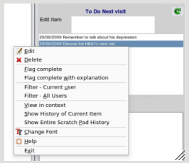

Once your scratchpad item is on the list under the editing area, there will be a need to action the item, i.e
do something with the item such as delete or mark completed

Right mouse clicking over the list, will popup a menu, with a complete list of options.
Please note that in the scratchpad, as in the entire EasyGP program, a complete audit trail will be kept of
your actions.
Edit - will allow you to change the item. You must of course hit the enter key again to save your changes.
Delete - will allow you to delete the item. If you added the item at the same consulation then the entry will be
reversed.
Flag Complete - the item will be flagged as completed
Flag Completed with explanation - you will be prompted to enter an explanation to accompany the finalisation of the item.
Filter - current user - the list will be filtered just to show your entries
Filter - all users - entries for all users will be shown in the list
Show in Context - will show the progress notes at the time the item was logged
Show history of current item - shows all entries by yourself or others including edits and deletes for a single item.
Show entire scratchpad history - shows all entries by yourself or others including edits and deletes for a all items.